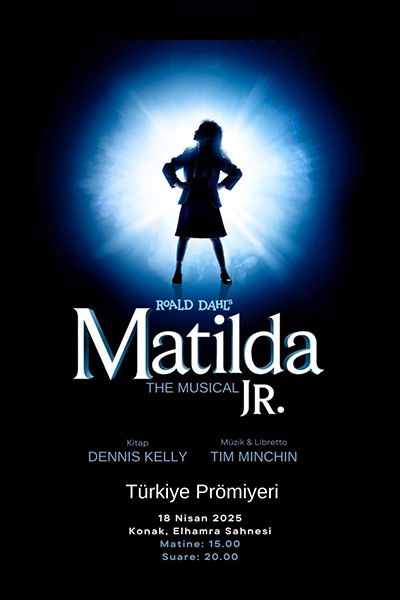
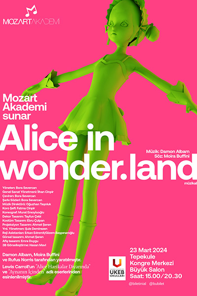
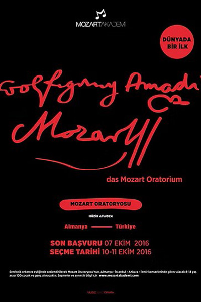
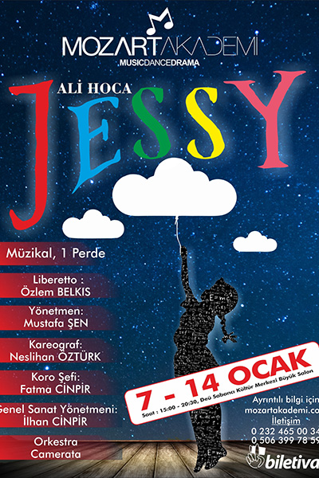
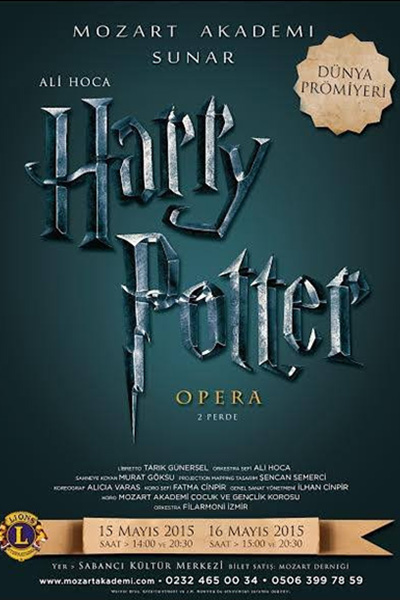
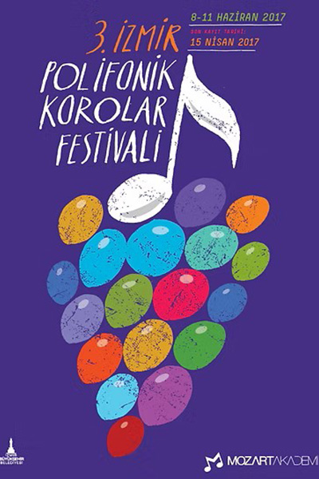
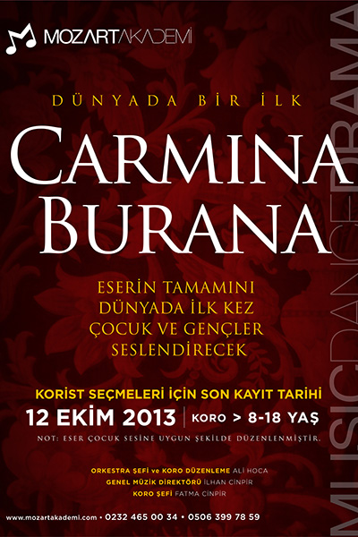
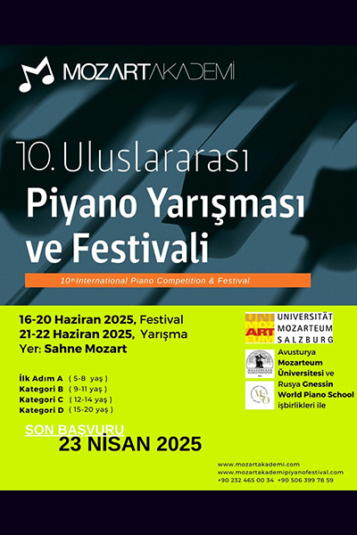

Geçmiş Projeler

Matilda Jr. Müzikali
Matilda Jr. Müzikali
(2025)
Türkiye Prömiyeri
- Dünyanın en çok ödül alan müzikallerinden Matilda Jr., Türkiye’de ilk kez Mozart Akademi tarafından sahnelendi.
- Roald Dahl’ın unutulmaz eserinden uyarlanan müzikal, zekâsı ve cesaretiyle dünyayı değiştiren küçük bir kızın ilham verici yolculuğunu anlatıyor. Hem yetişkinlerin hem çocukların birlikte keyifle izleyebileceği, aile dostu bir sahne eseri.
- Uluslararası standartlarda dekor, koreografi, kostüm ve orkestrayla sahneye taşındı.

Alice Harikalar Diyarında Müzikali
Alice Harikalar Diyarında Müzikali
(2024)
Türkiye Prömiyeri
- Dünyaca ünlü Alice in Wonderland eseri, National Theatre versiyonu Türkiye’de ilk kez Mozart Akademi tarafından sahnelendi.
- Renkli dekorlar, özgün koreografiler ve mizahi diyaloglarla seyircinin yoğun ilgisini gördü.
- Çocuk, genç ve profesyonel oyuncuların sahne enerjisiyle büyüleyici bir atmosfer yaratıldı.

Annie Müzikali
(2018 – 2025)
Türkiye Prömiyeri
- Broadway’in en sevilen çocuk müzikallerinden biri olan Annie, Mozart Akademi tarafından Türkiye’de ilk kez sahnelendi ve 2018 yılından itibaren her yıl düzenli sahnelenmektedir.
- Çocuk oyuncuların yanı sıra profesyonel sanatçıların da yer aldığı bu prodüksiyon, izleyicilere umut ve cesaret dolu bir hikâye sundu.
- Yüksek prodüksiyon kalitesi ve orijinal Broadway düzenlemelerine sadık kurgusuyla Türkiye sahne sanatları tarihinde önemli bir ilk oldu.

Das Mozart Oratorium Projesi
Das Mozart Oratorium Projesi
(2018)
Dünya Prömiyeri
- Wolfgang Amadeus Mozart’ın hayatı fantastik bir anlatımla sahneye taşındı.
- 50 kişilik çocuk korosu, 50 kişilik yetişkin korosu, opera solistleri ve KKTC Cumhurbaşkanlığı Senfoni Orkestrası eşliğinde seslendirildi.
- Çocuklara ve gençlere klasik müziği sevdirmeyi amaçlayan unutulmaz bir konser deneyimi oldu.

Jessy Müzikali
Jessy Müzikali
(2016)
Dünya Prömiyeri
- Dünyanın en çok beğenilen çocuk hikâyelerinden esinlenerek hazırlandı.
- Türkiye Prömiyeri, 7–14 Ocak 2016’da Sabancı Kültür Merkezi’nde yapıldı.
- İzmir’de gerçekleştirilen Dünya Prömiyeri, seyircilerden büyük beğeni aldı.
- Hikâye; kitaplara tutkuyla bağlı Jessy’nin yatılı okulda kötü müdür ve “Çekirge Çetesi”ne karşı verdiği mücadeleyi anlatıyor.

Harry Potter Çocuk Operası
Harry Potter Çocuk Operası
(2015)
Dünya Prömiyeri
- Mozart Akademi tarafından telif izni alınarak sahnelenen Harry Potter Çocuk Operası Dünya Prömiyeri, 16 Mayıs 2015’te İzmir Sabancı Kültür Merkezi’nde yapıldı.
- Türkiye’nin ilk özel operası olarak ulusal ve uluslararası basında geniş yer buldu.
- İngiltere’nin Ankara Büyükelçisi Richard Moore tarafından tebrik edildi.
- İngiltere, Almanya, Fransa ve İtalya basınında İzmir’in adı başarıyla duyuruldu.

Mozart Akademi İzmir Polifonik Korolar Festivali
Mozart Akademi İzmir Polifonik Korolar Festivali
(2014’ten itibaren)
- Çoksesli koro müziğinin gelişmesini ve yaygınlaşmasını amaçlamaktadır.
- Her yıl Haziran ayının ikinci haftasında Ahmed Adnan Saygun Sanat Merkezi’nde düzenlenmektedir.
- Türkiye’nin en büyük koro festivallerinden biri haline gelmiştir.

Carmina Burana Projesi
Carmina Burana Projesi
(2014)
Dünya Prömiyeri
- Carmina Burana eseri, dünyada ilk kez tamamen çocuk ve gençlerden oluşan bir koro tarafından seslendirildi.
- 200 çocuk ve genç, 55 kişilik senfonik orkestra eşliğinde sahne aldı.
- 23 Nisan 2014’te Ahmed Adnan Saygun Sanat Merkezi’nde, TÜRGÖK (Türkiye Görme Engelliler Vakıfı) yararına gerçekleştirildi.
- TRT Televizyonu tarafından kaydedildi.

Mozart Akademi Uluslararası Piyano Yarışması & Festivali
Mozart Akademi Uluslararası Piyano Yarışması & Festivali
(2012’den itibaren)
- 2012’den bu yana her yıl düzenlenmektedir.
- Her yıl farklı ülkelerden piyanistleri, pedagogları ve genç yetenekleri bir araya getirmektedir.
- 5–20 yaş arası 500’den fazla genç katılımcıya sahne imkânı sağlanmaktadır.
- Amaç: Gençlerin klasik müziğe ilgisini artırmak, uluslararası platformlarda temsil şansı kazandırmak ve farklı piyano ekollerini tanımalarına olanak vermektir.